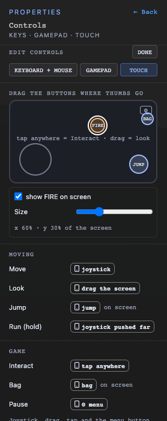

Controls Guide
Where it is
Click empty space so nothing is selected; the right-hand panel shows the main menu. Controls sits under Lights and Audio, with a summary such as "WASD · Space · E · Fire · Aim". Everything here is saved in the game (game.json), so every level uses it.
The list: every action, every device

Each row is an action; its chips say how to do it on each kind of device:
- Space grey: keyboard and mouse.
- RB R1 a gamepad button by both names, Xbox (green) and PlayStation (blue). They are the same button.
- L stick the same on both pads (sticks).
- ▯ jump touch, on phones and tablets.
Click any chip to change it: it opens that action on that device's tab, highlighted. EDIT opens the keyboard tab; + ADD BUTTON makes a button of your own.
Changing keys and buttons
EDIT shows a tab per device: KEYBOARD + MOUSE, GAMEPAD, TOUCH. DONE goes back to the list.
- Change one: click its key cap, then press the new key. To use a mouse button, click with it in the "click here" box that appears (clicking anywhere else cancels, so left click never gets bound by accident).
- Add another: the dashed + after the caps. An action works with any of its keys.
- Remove one: click it, then REMOVE. (Delete or Backspace while it's waiting also removes it.) CANCEL or Esc leaves it as it was.
- Clashes: a key two actions use turns amber with a note such as "E is also Interact". Both actions would fire; that's allowed, just usually not what you want.
- Esc can't be bound: it always leaves Play.
- Mouse buttons in Play: the first click captures the mouse (as always); after that, left and right click are buttons.
Gamepads: Xbox and PlayStation
Clicking a gamepad chip (or its +) opens a controller layout: triggers and shoulders across the top, the D-pad, Back and Start, the face buttons, and pressing each stick. Pick one; no controller needs to be connected. XBOX / PLAYSTATION only changes the names shown (A is ✕, RB is R1, Start is Options …): both pads have the same buttons. The one you're changing is ringed in white; one another action uses is outlined in amber.
Move and look are always the left and right stick. Run also happens with the left stick pushed nearly all the way; you can add a run button too.
Touch screens

- The phone: drag Jump, Bag and your on-screen buttons to where thumbs rest. Selecting one shows its size and "show on screen".
- Always there: Move is the joystick, Look is dragging the screen, Run is the joystick pushed far, Interact is a tap anywhere, Pause is the ⚙ menu button.
- On screen or not: Jump, Bag and your buttons show ▯ jump "on screen", or a dashed + "not on screen": click the + to put it on the screen.
Your own buttons (Fire, Aim …)
A new game starts with Fire (left click, RT / R2: plays the attack move) and Aim (right click, LT / L2: aims while held). Add more with + ADD BUTTON; click a button's › (or any of its chips in the list) for its page:
- NAME, and PRESS (once per press) or HOLD (on while held).
- Buttons: its keys and mouse buttons, gamepad buttons, and whether it's on the touch screen (PLACE… takes you to the phone).
- What it does, with no script: nothing; play a move of the player's character (a PRESS button plays it once, a HOLD button from press to release); or aim (HOLD buttons: the player aims where the camera looks while it's held). A move set to play on the upper body (its timeline in the character editor, PLAYS ON) plays over walking, running and jumping, so Fire shoots while you run, and holding Aim tilts it to where you look.
- DELETE BUTTON asks first; scripts that listened to it stop firing.
Scripts: "when the player presses a button"
A script trigger for any of your buttons, and for Jump, Run and Interact: it's pressed, it's released, or while it's held (repeats every so many seconds). Use it for anything beyond the built-in action: counting ammo, a sound, only firing if the player has the item (a condition), spawning something. The built-in action and scripts both run.
Feel: mouse speed, deadzone …
Each tab ends with the game's defaults for its device: mouse speed and invert (keyboard + mouse); look speed, deadzone and invert (gamepad); look speed and joystick size (touch). They used to be per device on the spawn point's Controls page; they're now part of the game.
What players can change

With Players can change keys and feel in the pause menu on (the default), the pause menu has a CONTROLS list: CHANGE any key, and a mouse speed slider. Their changes are saved on their own device for this game, take effect at once, and win over yours. USE THE GAME'S CONTROLS undoes them. Turn the switch off and everyone plays with your keys.
Prompts written as "Press {interact}" always show the key the player actually uses.
Tips
- Keep Fire and Aim on the mouse and triggers: that's where players look for them.
- An amber clash is fine for actions that never happen together, but Jump and Fire on one key will do both.
- Test in Play: click the game view first so the keys go to the game, not a text box.